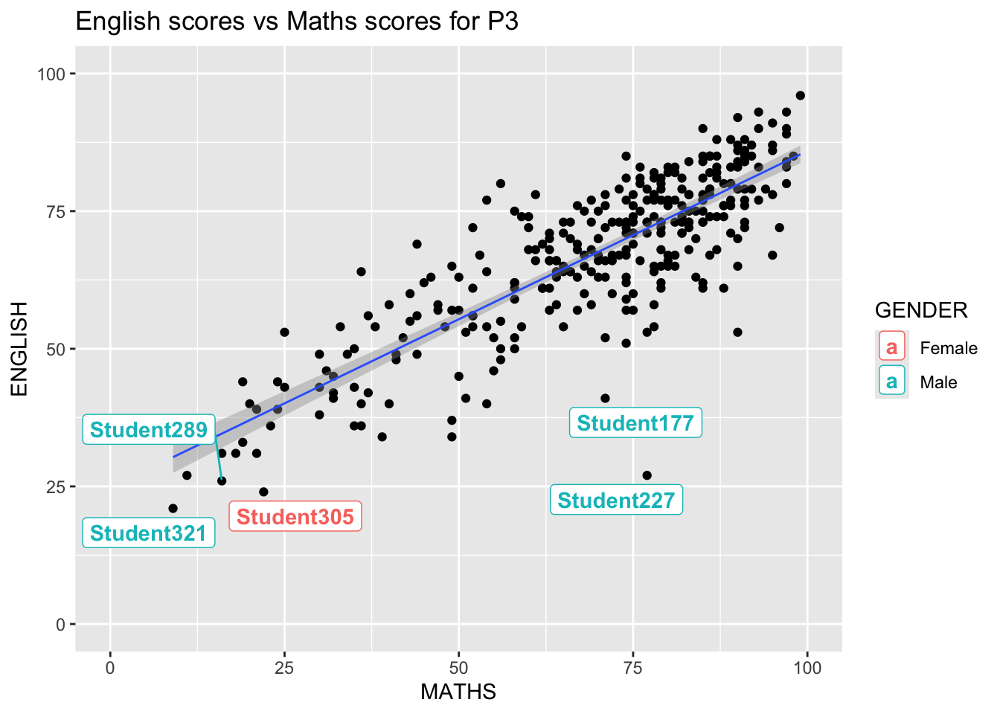
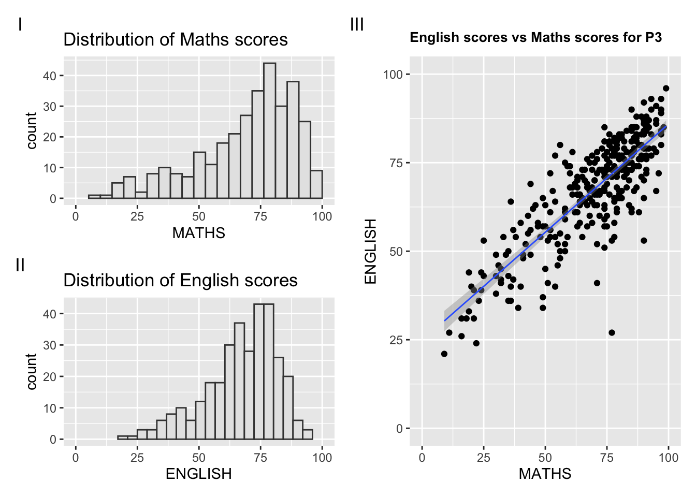

pacman::p_load(ggrepel, patchwork,
ggthemes, hrbrthemes,
tidyverse) #all packages are then installed.Hands-on_Ex02
Beyond ggplot2 Fundamentals
2.1 Overview
Several ggplot2 extensions for creating more elegant and effective statistical graphics. By the end of this exercise, one will be able to:
- control the placement of annotation on a graph by using functions provided in ggrepel package.
- create professional publication quality figure by using functions provided in ggthemes and hrbrthemes packages; and
- plot composite figure by combing ggplot2 graphs by using patchwork package.
2.2 Getting started
2.2.1 Installing and loading the required libraries
In this exercise, besides tidyverse, four R packages will be used.
They are:
- ggrepel: a R package provides geoms for ggplot2 to repel overlapping text labels.
- ggthemes: a R package provides some extra themes, geoms, and scales for ggplot.
- hrbrthemes: a R package provides typographu-centric themes and theme components for ggplot2.
- patchwork: a R package for preparing composite figure created using ggplot2.
Code chunk below will be used to check if these packages have been installed and also load them onto the working R environment.
2.2.2 Importing data
For the purpose of this exercise, a data file called Exam_data will be used. It consists of year end examination grades of a cohort of primary 3 students from a local school. It is in csv file format.
The code chunk below imports exam_data.csv into R environment by using read_csv() function of readr package. readr is one of the tidyversepackage.
library(readr)
exam_data <- read_csv("data/Exam_data.csv")There are a total of seven attributes in the exam_data tibble data frame. Four of them are categorical data type and the other three are in continuous data type.
- The categorical attributes are ID, CLASS, GENDER and RACE.
- The continuous attributes are MATHS, ENGLISH and SCIENCE.
2.3 Beyond ggplot Annotation: ggrepel
One of the challenge in plotting statistical graph is annotation, especially with large number of data points.
🦖 Used colours to differentiate genders.
ggplot(data=exam_data,
aes(x = MATHS,
y = ENGLISH)) +
geom_point() +
geom_smooth(method=lm,
linewidth=0.5) +
geom_label(aes(label = ID,
colour = GENDER), #added colours
hjust = .5,
vjust = -.5) +
coord_cartesian(xlim=c(0,100),
ylim=c(0,100)) +
ggtitle("English scores versus Maths scores for Primary 3")

ggplot(data=exam_data,
aes(x = MATHS,
y = ENGLISH)) +
geom_point() +
geom_smooth(method=lm,
linewidth=0.5) +
geom_label(aes(label = ID),
hjust = .5,
vjust = -.5) +
coord_cartesian(xlim=c(0,100),
ylim=c(0,100)) +
ggtitle("English scores versus Maths scores for Primary 3")ggrepel  is an extension of ggplot2 package which provides
is an extension of ggplot2 package which provides geoms for ggplot2 to repel overlapping text as in the examples below.

We simply replace geom_text() by geom_text_repel() and geom_label() with geom_label_repel().
2.3.1 Working with ggrepel
🦖 Applied colours to differentiate genders.
ggplot(data=exam_data,
aes(x = MATHS,
y = ENGLISH)) +
geom_point() +
geom_smooth(method = lm,
size = 0.5) +
geom_label_repel(aes(label = ID,
colour = GENDER), #colour for gender
fontface = "bold") +
coord_cartesian(xlim = c(0,100),
ylim = c(0,100)) +
ggtitle("English scores vs Maths scores for P3")

ggplot(data=exam_data,
aes(x = MATHS,
y = ENGLISH)) +
geom_point() +
geom_smooth(method = lm,
size = 0.5) +
geom_label_repel(aes(label = ID),
fontface = "bold") +
coord_cartesian(xlim = c(0,100),
ylim = c(0,100)) +
ggtitle("English scores vs Maths scores for P3")2.4 Beyond ggplot2 Themes
ggplot2 comes with eight built-in themes. They are:
theme_gray(), theme_bw(), theme_classic(), theme_dark(), theme_light(), theme_linedraw(), theme_minimal(), theme_void().
🦖 Applied theme_light() and different colors for fill and color.
ggplot(data=exam_data,
aes(x = MATHS)) +
geom_histogram(bins = 20,
boundary = 100,
color = "grey90",
fill = "pink") +
theme_light() +
ggtitle("Distribution of Maths scores")
🦖 Applied theme_dark() and different colors for fill and color.
ggplot(data=exam_data,
aes(x = MATHS)) +
geom_histogram(bins = 20,
boundary = 100,
color = "grey90",
fill = "skyblue") +
theme_dark() +
ggtitle("Distribution of Maths scores")

ggplot(data=exam_data,
aes(x = MATHS)) +
geom_histogram(bins = 20,
boundary = 100,
color = "grey25",
fill = "grey90") +
theme_gray() +
ggtitle("Distribution of Maths scores")🦄 Refer to this link to learn more about ggplot2 Themes
2.4.1 Working with ggtheme package
ggthemes provides ggplot2 themes that replicate the look of plots by Edward Tuffe, Stephen Few, Fivethirtyeight, The Economist, ‘Stata’, ‘Excel’, and The Wall Street Journal, among others.
In the example below, The Economist theme is used.
🦖 Used theme_stata()
ggplot(data=exam_data,
aes(x = MATHS)) +
geom_histogram(bins = 20,
boundary = 100,
color = "grey25",
fill = "grey90",
linewidth = 0.3) +
ggtitle("Distribution of Maths scores") +
theme_stata()

ggplot(data=exam_data,
aes(x = MATHS)) +
geom_histogram(bins = 20,
boundary = 100,
color = "grey25",
fill = "grey90") +
ggtitle("Distribution of Maths scores") +
theme_economist()It also provides some extra geoms and scales fpr ggplot2. Consult this vignette to learn more. *Link is broken as of Jan 19.
2.4.2 Working with hrbrthemes package
hrbrthemes package provides a base theme that focuses on typographic elements, including where various labels are placed as well as the fonts that are used.
ggplot(data=exam_data,
aes(x = MATHS)) +
geom_histogram(bins=20,
boundary=100,
color="grey25",
fill="pink") +
ggtitle("Distribution of Maths scores") +
theme_ipsum()

ggplot(data=exam_data,
aes(x = MATHS)) +
geom_histogram(bins=20,
boundary=100,
color="grey25",
fill="grey90") +
ggtitle("Distribution of Maths scores") +
theme_ipsum()🦖 Display English scores.
ggplot(data=exam_data,
aes(x = ENGLISH)) +
geom_histogram(bins=20,
boundary=100,
color="grey25",
fill="grey90") +
ggtitle("Distribution of English scores") +
theme_ipsum(axis_text_size = 18,
base_size = 15,
grid = "Y") 

ggplot(data=exam_data,
aes(x = MATHS)) +
geom_histogram(bins=20,
boundary=100,
color="grey25",
fill="grey90") +
ggtitle("Distribution of Maths scores") +
theme_ipsum(axis_text_size = 18,
base_size = 15,
grid = "Y")
Tip
axis_title_sizeargument is used to increase the font size of the axis title to 18.base_sizeargument is used to increase the default axis label to 15.gridargument is used to remove the x-axis grid lines.
2.5 Beyond Single Graph
It is not unusual that multiple graphs are required to tell a compelling visual story. There are several ggplot2 extensions provide functions to compose figure with multiple graphs. In this section, learn how to create composite plot by combining multiple graphs. First, let us create three statistical graphics by using the code chunk below.

p1 <- ggplot(data=exam_data,
aes(x = MATHS)) +
geom_histogram(bins=20,
boundary = 100,
color="grey25",
fill="grey90") +
coord_cartesian(xlim=c(0,100)) +
ggtitle("Distribution of Maths scores")
p1Next -

p2 <- ggplot(data=exam_data,
aes(x = ENGLISH)) +
geom_histogram(bins=20,
boundary = 100,
color="grey25",
fill="grey90") +
coord_cartesian(xlim=c(0,100)) +
ggtitle("Distribution of English scores")
p2
Lastly, we will draw a scatterplot for English score vs Maths score by the plot below:
🦖 Used theme_economist().
p100 <- ggplot(data=exam_data,
aes(x = MATHS,
y = ENGLISH)) +
geom_point() +
geom_smooth(method = lm,
size = 0.5) +
coord_cartesian(xlim=c(0,100),
ylim=c(0,100)) +
ggtitle("English scores vs Maths scores for P3") +
theme_economist() +
theme(plot.title = element_text(size = 10, face = "bold"))
p100

p99 <- ggplot(data=exam_data,
aes(x = MATHS,
y = ENGLISH)) +
geom_point() +
geom_smooth(method = lm,
size = 0.5) +
coord_cartesian(xlim=c(0,100),
ylim=c(0,100)) +
ggtitle("English scores vs Maths scores for P3")
p992.5.1 Creating Composite Graphics: patchwork methods 
There are several ggplot2 extension’s functions support the needs to prepare composite figure by combining several graphs such as grid.arrange() of gridExtra package and plot_grid() of cowplot package  . The extension called patchwork is specially designed for combining separate ggplot 2 graphs into a single figure.
. The extension called patchwork is specially designed for combining separate ggplot 2 graphs into a single figure.
Patchwork package has a very simple syntax where we can create layouts super easily. Here is the general syntax that combines:
- Two-column layout using the Plus sign
+. - Parenthesis
()to create a subplot group. - Two-row layout using the Division design
/
2.5.2 Combing two ggplot2 graphs
Figure in the tabset below shows a a composite of two histograms created using patchwork. Code is pretty simple.
patchwork <- p1 + p2
patchwork & theme_stata()

p1 + p22.5.3 Combining three ggplot2 graphs
We can plot more complex composite by using appropriate operators. For example, the composite figure below is plotted by using: - “/” operator to stack two ggplot2 graphs - “|” operator to place the plots beside each other - “()” operator to define the sequence of the plotting.
🦖 Changed the layout.
p3 | ( p2 / p1)
🦖 Used theme_economist()
patchwork <- p3 | (p2 / p1)
patchwork & theme_economist() +
theme(axis.title = element_text(size = rel(1)),
axis.text = element_text(size = 8))

(p1 / p2) | p3🦄 Learn more with Plot Assembly.
2.5.4 Creating a composite figure with tag
In order to identify subplots in text, patchwork also provides auto-tagging capabilities as shown in the figure below.
🦖 Changed level tag and used a new theme theme_stata()
((p1 / p2) | p3) +
plot_annotation(tag_levels = 'A') +
theme_stata()

((p1 / p2) | p3) +
plot_annotation(tag_levels = 'I')2.5.5 Creating figure with insert
Beside providing functions to place plots next to each other based on the provided layout. With inset_element() of patchwork, we can place one or several plots or graphic elements freely on top or below another plot.
🦖 Used theme_economist() and altered the position of the top layer plot.
p3 + theme_economist() +
inset_element(p1,
left = 0.5,
bottom = 0,
right = 1,
top = 0.3) 

p3 + inset_element(p2,
left = 0.02,
bottom = 0.7,
right = 0.5,
top = 1)2.5.6 Creating a composite figure by using patchwork and ggtheme
Figure below is created by combining patchwork and theme_economist() of ggthemes package discussed earlier.
Used theme_stata() and changed layout.
patchwork <- p3 | (p1 / p2)
patchwork & theme_stata()

patchwork <- (p1 / p2) | p3
patchwork & theme_economist()